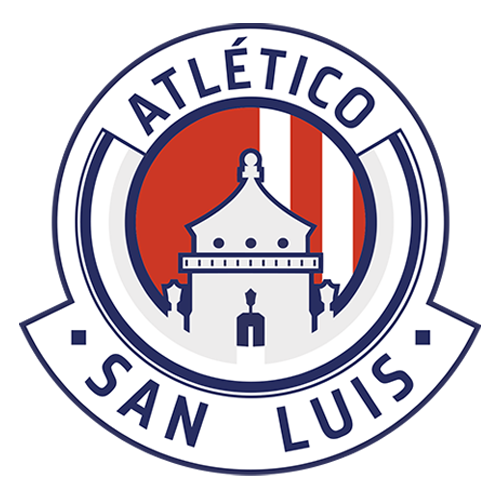

La Gran Final del Apertura 2023 definió en su partido de vuelta al campeón: Club América venció a Tigres 3-0 en tiempos extra y conquistó su campeonato 14 en México. Después de cinco años sin títulos, las Águilas hicieron varios cambios: apostaron por fichar al delantero Julián Quiñones, quien fue clave para darle al Atlas un bicampeonato, además de que el entrenador brasileño André Jardine relevó al argentino Fernando Ortiz.
América conquistó su decimocuarto título en el futbol mexicano. De los 14 campeonatos, seis han sido en la historia de los torneos cortos: Verano 2002, Clausura 2005, Apertura 2014, Apertura 2018, además del reciente Apertura 2023.
La Primera División de México también conocida simplemente como Liga MX o por motivos de patrocinio Liga BBVA MX, es la máxima categoría masculina del sistema de ligas de México y la principal competición de clubes del país. Desde el año 2012 cuenta con una organización autónoma respecto a la Federación Mexicana de Fútbol. Se juegan dos torneos cortos por ciclo anual futbolístico (cada uno con su campeón) denominados Apertura y Clausura (en ese orden). El campeonato se define por medio de una fase final posterior a cada fase regular, conocida como liguilla; clasifican a ella los diez primeros lugares de la tabla general.
| Temporada 2022-2023 | |||||||||||||||||
|---|---|---|---|---|---|---|---|---|---|---|---|---|---|---|---|---|---|
| POSICION | LOGO | EQUIPO | GANADOS | EMPATADOS | PERDIDOS | PUNTOS | |||||||||||
| 1 | Monterrey | 13 | 1 | 3 | 40 | ||||||||||||
| 2 | América | 9 | 7 | 1 | 34 | ||||||||||||
| 3 | Guadalajara | 10 | 4 | 3 | 34 | ||||||||||||
| 4 | Toluca | 9 | 5 | 3 | 32 | ||||||||||||
| 5 | Pachuca | 10 | 1 | 6 | 31 | ||||||||||||
| 6 | León | 8 | 6 | 3 | 30 | ||||||||||||
| 7 | Tigres | 7 | 4 | 6 | 25 | ||||||||||||
| 8 | Cruz Azul | 7 | 3 | 7 | 24 | ||||||||||||
| 9 | Atlas | 4 | 9 | 4 | 21 | ||||||||||||
| 10 | Querétaro | 4 | 8 | 5 | 20 | ||||||||||||
| 11 | Puebla | 6 | 2 | 9 | 20 | ||||||||||||
| 12 |  | Atlético San Luis | 5 | 4 | 8 | 19 | |||||||||||